Diagramas del sistema
34 diagramas con explicaciones, fuentes editables e imágenes para adjuntar a stories. Arquitectura objetivo y modelos propuestos; todavía no representan código implementado. Los pendientes y escenarios están en los documentos enlazados.
Índice y mapa de stories · Guía didáctica · Backlog · Decisiones (ADR)
01-arquitectura.md · diseño objetivo o propuesta, sin implementación comprobada · HU-110, HU-140, HU-162, HU-181, HU-200, HU-211
ARQ-01. Contexto y actores
Ver Mermaid editable
flowchart TB
Mozo["Mozo<br/>abre mesas y carga comandas"]
Cajero["Cajero<br/>cobra, factura y cierra la caja"]
Dueno["Dueño<br/>configura, mira el negocio<br/>y lleva sus finanzas"]
Contador["Contador<br/>solo facturación, solo lectura"]
subgraph Sistema["Sistema nuevo"]
direction LR
Local["En el local<br/>vender aunque no haya internet"]
Nube["En la nube<br/>ver desde cualquier lugar"]
Local -->|"copia cada X<br/>y al cerrar caja"| Nube
end
ARCA["ARCA<br/>autoriza facturas con CAE"]
Impresora["Impresora térmica ESC/POS<br/>tickets y facturas"]
Cliente["Cliente del local<br/>recibe su comprobante"]
Mozo --> Local
Cajero --> Local
Dueno --> Local
Dueno --> Nube
Contador --> Nube
Local --->|"pide CAE<br/>cuando hay conexión"| ARCA
Local -->|"imprime"| Impresora
Impresora --> Cliente01-arquitectura.md · diseño objetivo o propuesta, sin implementación comprobada · HU-232, HU-250, HU-251, HU-252, HU-103
ARQ-02. Contenedores: qué corre en el local y qué en la nube
Ver Mermaid editable
flowchart TB
subgraph LocalRed["Frontera: red del local"]
Navegador["Navegador en la PC de caja<br/>(a futuro, celulares)"]
subgraph PC["PC del local, servicios de Windows"]
Django["Django en modo local<br/>API de la caja"]
Worker["Worker local<br/>ARCA, impresión y envío"]
PGL[("PostgreSQL local<br/>fuente de verdad de la operación")]
end
Hasar["Hasar P-250N<br/>ESC/POS por USB o red"]
end
subgraph Nube["Frontera: nube"]
Portal["Portal React<br/>panel, contador, Mis finanzas"]
API["Django en modo nube<br/>ingesta, lectura, finanzas"]
PGN[("PostgreSQL nube<br/>réplica por local y finanzas")]
end
ARCA["ARCA<br/>WSAA y WSFEv1"]
Navegador -->|"HTTP en la red local, PIN"| Django
Django --> PGL
Worker --> PGL
Worker -->|"ESC/POS"| Hasar
Worker -->|"HTTPS con certificado del local"| ARCA
Worker -->|"HTTPS saliente con credencial del equipo"| API
Portal -->|"HTTPS, email y contraseña"| API
API --> PGN01-arquitectura.md · diseño objetivo o propuesta, sin implementación comprobada · HU-100, HU-104, HU-232
ARQ-03. Un código Django, dos modos
Ver Mermaid editable
flowchart TB
subgraph Front["frontend: React"]
Pantallas["Pantallas"]
Contratos["capa de servicios<br/>contratos tipados"]
Pantallas --> Contratos
end
subgraph Back["backend: un proyecto Django"]
Vistas["Vistas DRF<br/>serializers y permisos"]
Servicios["Servicios de dominio<br/>cobrar, cerrar caja, facturar"]
Repos["Modelos y consultas"]
Vistas --> Servicios --> Repos
subgraph SoloLocal["solo FLOKY_MODE=local"]
Fiscal["fiscal: worker ARCA"]
Impresion["printing: ESC/POS"]
Emisor["sync_sender: outbox"]
end
subgraph SoloNube["solo FLOKY_MODE=cloud"]
Receptor["sync_receiver: ingesta"]
Panel["dashboard y accountant"]
Finanzas["finances"]
end
Servicios --> Fiscal
Servicios --> Emisor
Servicios --> Impresion
Receptor --> Repos
Panel --> Repos
Finanzas --> Repos
end
Contratos -->|"HTTP JSON"| Vistas01-arquitectura.md · diseño objetivo o propuesta, sin implementación comprobada · HU-240, HU-241, HU-243, HU-200, HU-210
ARQ-04. Locales como tenants
Ver Mermaid editable
flowchart LR
Lucia["Usuaria: Lucía, dueña"]
Contador["Usuario: Marcos, contador"]
subgraph Membresias["Membresías"]
M1["Lucía · Local Centro · dueña"]
M2["Lucía · Local Norte · dueña"]
M3["Marcos · Local Centro · contador"]
end
subgraph Datos["Datos en la nube, cada fila con tenant_id"]
L1[("Local Centro<br/>ventas, comprobantes, caja")]
L2[("Local Norte<br/>ventas, comprobantes, caja")]
Fin[("Mis finanzas de Lucía<br/>tenant_id opcional")]
end
Lucia --> M1 --> L1
Lucia --> M2 --> L2
Contador --> M3 -->|"solo comprobantes"| L1
Lucia -->|"segunda clave"| Fin01-arquitectura.md · diseño objetivo o propuesta, sin implementación comprobada · HU-231, HU-234, HU-235, HU-236
ARQ-05. Entornos: desarrollo, pruebas y producción
Ver Mermaid editable
flowchart LR
subgraph Dev["Desarrollo: PC de cada uno"]
DC["Docker Compose<br/>Django local + Django nube<br/>2 PostgreSQL + Vite"]
DA["ARCA: doble o homologación"]
end
subgraph Pru["Pruebas"]
PL["Servidor local de prueba<br/>canal pruebas"]
PN["Nube de pruebas<br/>Cloud Run + Neon + Pages"]
PA["ARCA homologación"]
end
subgraph Prod["Producción"]
RL["Servidor del local<br/>canal estable"]
RN["Nube de producción<br/>Cloud Run + Neon + Pages"]
RA["ARCA producción"]
end
GH["GitHub Actions"]
DC -->|"pull request"| GH
GH -->|"merge a main"| PL
GH -->|"merge a main"| PN
GH -->|"tag y aprobación"| RL
GH -->|"tag y aprobación"| RN
PL --> PA
RL --> RA02-dominio.md · diseño objetivo o propuesta, sin implementación comprobada · HU-132, HU-140, HU-162, HU-211, HU-261, HU-310, HU-320, HU-330
DOM-01. Mapa de capacidades: MVP y v2
Ver Mermaid editable
flowchart TB
subgraph MVP["MVP: reemplazar el sistema anterior"]
Salon["Salón y comandas"]
Cobro["Cobro y caja"]
Fact["Facturación ARCA"]
Imp["Impresión"]
Traz["Trazabilidad del turno"]
Sync["Sincronización"]
Panel["Panel del dueño"]
Cont["Vista del contador"]
Fin["Mis finanzas"]
Salon --> Cobro --> Fact --> Imp
Cobro --> Traz
Cobro --> Sync --> Panel
Sync --> Cont
Fin -.-> Panel
end
subgraph V2["v2"]
I18n["Multilenguaje"]
QR["Menú QR"]
Stock["Stock de bebidas"]
Cel["Pedidos desde celulares"]
end
Salon -.-> Cel
Salon -.-> Stock
I18n -.-> QR
Sync -.-> QR02-dominio.md · diseño objetivo o propuesta, sin implementación comprobada · HU-135, HU-140, HU-142, HU-162, HU-165, HU-226, HU-223
DOM-02. Del pedido al comprobante
Ver Mermaid editable
flowchart LR
Mesa["Sesión de mesa<br/>o mostrador"] -->|"una o varias"| Comanda["Comanda enviada<br/>líneas con precio copiado"]
Comanda -->|"al cobrar se cierra en"| Venta["Venta<br/>total calculado por el servidor"]
Venta -->|"uno o dos"| Pago["Pago<br/>medio e importe"]
Pago -.->|"si se equivocó el medio"| Correccion["Corrección<br/>antes, después y motivo"]
Venta -->|"0 o 1"| Factura["Comprobante fiscal<br/>B o A, con CAE"]
Venta -->|"o"| SinComp["Sin comprobante<br/>F9, lista aparte"]
Factura -.->|"si se anula"| NC["Nota de crédito"]
Turno["Turno de caja"] -->|"agrupa"| Venta
Turno -->|"agrupa"| Mov["Movimientos de caja<br/>retiros, aportes, gastos del mozo"]02-dominio.md · diseño objetivo o propuesta, sin implementación comprobada · HU-120, HU-112, HU-243, HU-211, HU-255, HU-260
DOM-03. ¿De quién es cada dato?
Ver Mermaid editable
flowchart LR
subgraph EscribeLocal["Se escribe en el local"]
A1["Salón, comandas, ventas, pagos"]
A2["Caja, comprobantes, eventos"]
A3["Mesas, personal con PIN"]
end
subgraph EscribeNube["Se escribe en la nube"]
B1["Locales y membresías"]
B2["Usuarios con email: dueño y contador"]
B3["Mis finanzas"]
B4["Configuración del servidor local"]
B5["Carta y precios"]
end
EscribeLocal -->|"sube por el outbox"| Replica[("Réplica de lectura en la nube")]
B4 -->|"baja al sincronizar"| ServidorLocal["Servidor local"]
B5 -->|"baja al sincronizar"| ServidorLocal03-clases.md · diseño objetivo o propuesta, sin implementación comprobada · HU-120, HU-131, HU-135, HU-140, HU-142, HU-162
CLA-01. Salón y venta
Ver Mermaid editable
classDiagram
class Producto {
codigo
nombre
precio
alicuotaIva
activo
}
class SesionMesa {
mesa
mozo
comensales
estado
abrir()
pedirPrecuenta(descuento)
}
class Comanda {
numero
claveIdempotencia
enviar()
}
class LineaComanda {
nombreCopiado
precioUnitarioCopiado
cantidad
aclaraciones
anular(motivo)
}
class Venta {
subtotal
descuento
total
estadoFiscal
cobrar(pagos)
anular(motivo)
finalizarSinComprobante()
}
class Pago {
medio
importe
corregirMedio(nuevo, motivo)
}
class ComprobanteFiscal {
tipo
puntoVenta
numero
condicionIvaReceptor
cae
vencimientoCae
}
SesionMesa "1" --> "*" Comanda
Comanda "1" --> "*" LineaComanda
LineaComanda "*" --> "1" Producto : copia nombre y precio
SesionMesa "1" --> "0..1" Venta
Venta "1" --> "1..2" Pago
Venta "1" --> "0..*" ComprobanteFiscal : factura y notas de crédito03-clases.md · diseño objetivo o propuesta, sin implementación comprobada · HU-150, HU-152, HU-220, HU-223, HU-225, HU-210, HU-212, HU-182
CLA-02. Caja, trazabilidad y Mis finanzas
Ver Mermaid editable
classDiagram
class TurnoCaja {
cajero
fondoInicial
efectivoEsperado
efectivoContado
diferencia
abrir(fondo)
cerrar(conteo)
}
class MovimientoCaja {
tipo
medio
importe
motivo
}
class Evento {
hora
usuario
accion
sesionMesa
venta
turno
}
class CorreccionPago {
medioAnterior
medioNuevo
motivo
posteriorAlCierre
}
class MovimientoFinanzas {
fecha
tipo
importe
categoria
local opcional
}
class CategoriaFinanzas {
nombre
tipo
delNegocio
}
TurnoCaja "1" --> "*" MovimientoCaja
TurnoCaja "1" --> "*" Evento
CorreccionPago ..> Evento : genera
MovimientoFinanzas "*" --> "1" CategoriaFinanzas
note for MovimientoFinanzas "Vive solo en la nube. Solo el dueño, con segunda clave."
note for Evento "Solo agregar. Se replica tal cual."04-datos.md · diseño objetivo o propuesta, sin implementación comprobada · HU-100, HU-140, HU-244, HU-260
DAT-01. Base local: núcleo de venta y outbox
Ver Mermaid editable
erDiagram
TENANT ||--o{ CASH_SHIFT : has
TENANT ||--o{ SALE : records
CASH_SHIFT ||--o{ SALE : groups
SALE ||--|{ PAYMENT : paid_with
SALE ||--o{ FISCAL_DOCUMENT : documented_by
SALE ||--o{ FISCAL_JOB : queues
SALE ||--o{ PRINT_JOB : queues
TENANT ||--o{ SYNC_OUTBOX : emits
TENANT ||--o{ AUDIT_LOG : records
TENANT {
uuid id PK
string cuit
int point_of_sale
}
SALE {
uuid id PK "UUID v7 generado en el local"
uuid tenant_id FK
uuid cash_shift_id FK
numeric total
string status
string fiscal_status
int version
}
PAYMENT {
uuid id PK
uuid sale_id FK
string method
numeric amount
}
FISCAL_DOCUMENT {
uuid id PK
uuid sale_id FK
string type
int number
string cae
string status
}
FISCAL_JOB {
uuid id PK
string status
int attempts
timestamp next_attempt_at
}
PRINT_JOB {
uuid id PK
string printer
string status
}
SYNC_OUTBOX {
uuid id PK
uuid tenant_id FK
bigint sequence UK
string entity
uuid entity_id
int version
jsonb payload
timestamp confirmed_at
}
AUDIT_LOG {
uuid id PK
uuid tenant_id FK
string actor_type
string actor_id
string action
jsonb before
jsonb after
}
CASH_SHIFT {
uuid id PK
uuid tenant_id FK
numeric expected_cash
numeric counted_cash
}04-datos.md · diseño objetivo o propuesta, sin implementación comprobada · HU-240, HU-241, HU-243, HU-263, HU-264, HU-210
DAT-02. Base en la nube: locales, membresías, réplica y finanzas
Ver Mermaid editable
erDiagram
USER ||--o{ MEMBERSHIP : has
TENANT ||--o{ MEMBERSHIP : grants
TENANT ||--o{ DEVICE : links
TENANT ||--o{ SALE_REPLICA : receives
TENANT ||--o{ FISCAL_DOCUMENT_REPLICA : receives
TENANT ||--o{ SYNC_BATCH : records
USER ||--o{ FINANCE_ENTRY : keeps
FINANCE_CATEGORY ||--o{ FINANCE_ENTRY : classifies
TENANT |o--o{ FINANCE_ENTRY : optional
USER {
uuid id PK
string email UK
}
MEMBERSHIP {
uuid user_id FK
uuid tenant_id FK
string role "owner o accountant"
bool is_active
}
TENANT {
uuid id PK
string name
string cuit
int sync_interval_min
}
DEVICE {
uuid id PK
uuid tenant_id FK
string credential_hash
string version
timestamp last_seen_at
}
SALE_REPLICA {
uuid id PK "mismo id que en el local"
uuid tenant_id FK "con RLS"
int version
numeric total
string fiscal_status
}
FISCAL_DOCUMENT_REPLICA {
uuid id PK
uuid tenant_id FK "con RLS"
string type
int number
numeric net
numeric vat
}
SYNC_BATCH {
uuid id PK
uuid tenant_id FK
bigint sequence_to
int applied
int ignored
string result
}
FINANCE_ENTRY {
uuid id PK
uuid owner_id FK
uuid tenant_id FK "opcional"
date date
numeric amount
}
FINANCE_CATEGORY {
uuid id PK
string name
bool is_business
}05-secuencias-tecnicas.md · diseño objetivo o propuesta, sin implementación comprobada · HU-140, HU-171, HU-271
TEC-01. Cobrar e imprimir sin esperar a ARCA
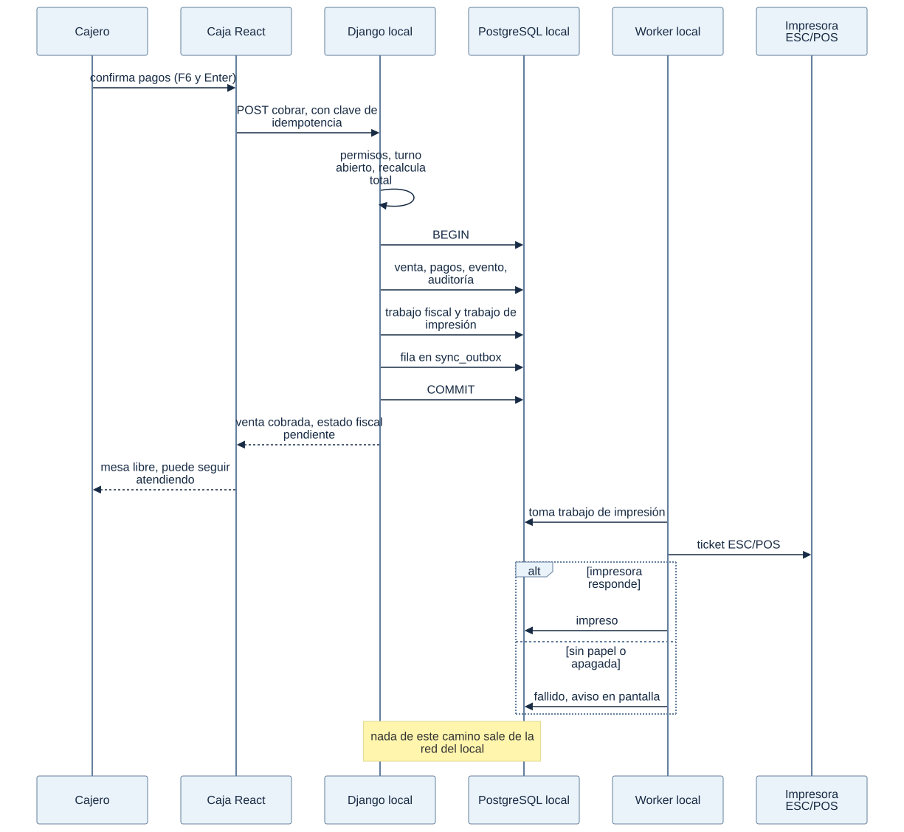
Ver Mermaid editable
sequenceDiagram
participant C as Cajero
participant W as Caja React
participant D as Django local
participant DB as PostgreSQL local
participant K as Worker local
participant H as Impresora ESC/POS
C->>W: confirma pagos (F6 y Enter)
W->>D: POST cobrar, con clave de idempotencia
D->>D: permisos, turno abierto, recalcula total
D->>DB: BEGIN
D->>DB: venta, pagos, evento, auditoría
D->>DB: trabajo fiscal y trabajo de impresión
D->>DB: fila en sync_outbox
D->>DB: COMMIT
D-->>W: venta cobrada, estado fiscal pendiente
W-->>C: mesa libre, puede seguir atendiendo
K->>DB: toma trabajo de impresión
K->>H: ticket ESC/POS
alt impresora responde
K->>DB: impreso
else sin papel o apagada
K->>DB: fallido, aviso en pantalla
end
Note over D,DB: nada de este camino sale de la red del local05-secuencias-tecnicas.md · diseño objetivo o propuesta, sin implementación comprobada · HU-161, HU-162, HU-163, HU-166
TEC-02. Emitir la factura con CAE
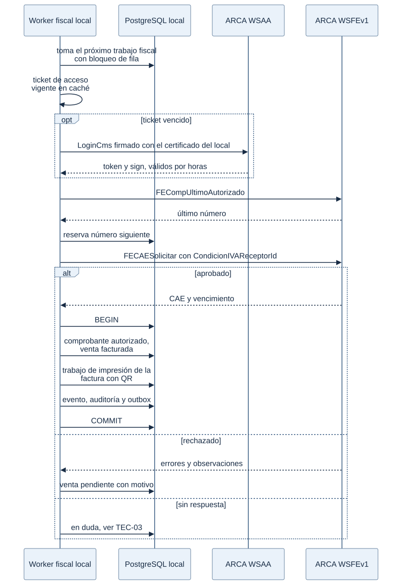
Ver Mermaid editable
sequenceDiagram
participant K as Worker fiscal local
participant DB as PostgreSQL local
participant AA as ARCA WSAA
participant AF as ARCA WSFEv1
K->>DB: toma el próximo trabajo fiscal con bloqueo de fila
K->>K: ticket de acceso vigente en caché
opt ticket vencido
K->>AA: LoginCms firmado con el certificado del local
AA-->>K: token y sign, válidos por horas
end
K->>AF: FECompUltimoAutorizado
AF-->>K: último número
K->>DB: reserva número siguiente
K->>AF: FECAESolicitar con CondicionIVAReceptorId
alt aprobado
AF-->>K: CAE y vencimiento
K->>DB: BEGIN
K->>DB: comprobante autorizado, venta facturada
K->>DB: trabajo de impresión de la factura con QR
K->>DB: evento, auditoría y outbox
K->>DB: COMMIT
else rechazado
AF-->>K: errores y observaciones
K->>DB: venta pendiente con motivo
else sin respuesta
K->>DB: en duda, ver TEC-03
end05-secuencias-tecnicas.md · diseño objetivo o propuesta, sin implementación comprobada · HU-164, HU-168
TEC-03. Reintento seguro: nunca dos facturas, nunca un número salteado
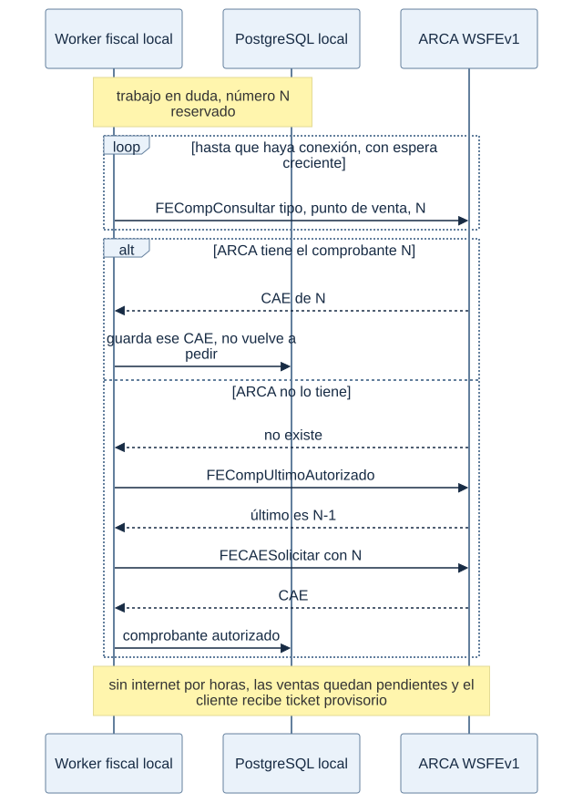
Ver Mermaid editable
sequenceDiagram
participant K as Worker fiscal local
participant DB as PostgreSQL local
participant AF as ARCA WSFEv1
Note over K,DB: trabajo en duda, número N reservado
loop hasta que haya conexión, con espera creciente
K->>AF: FECompConsultar tipo, punto de venta, N
end
alt ARCA tiene el comprobante N
AF-->>K: CAE de N
K->>DB: guarda ese CAE, no vuelve a pedir
else ARCA no lo tiene
AF-->>K: no existe
K->>AF: FECompUltimoAutorizado
AF-->>K: último es N-1
K->>AF: FECAESolicitar con N
AF-->>K: CAE
K->>DB: comprobante autorizado
end
Note over K,AF: sin internet por horas, las ventas quedan pendientes y el cliente recibe ticket provisorio05-secuencias-tecnicas.md · diseño objetivo o propuesta, sin implementación comprobada · HU-260, HU-261, HU-262, HU-263, HU-264, HU-255
TEC-04. Sincronización por outbox
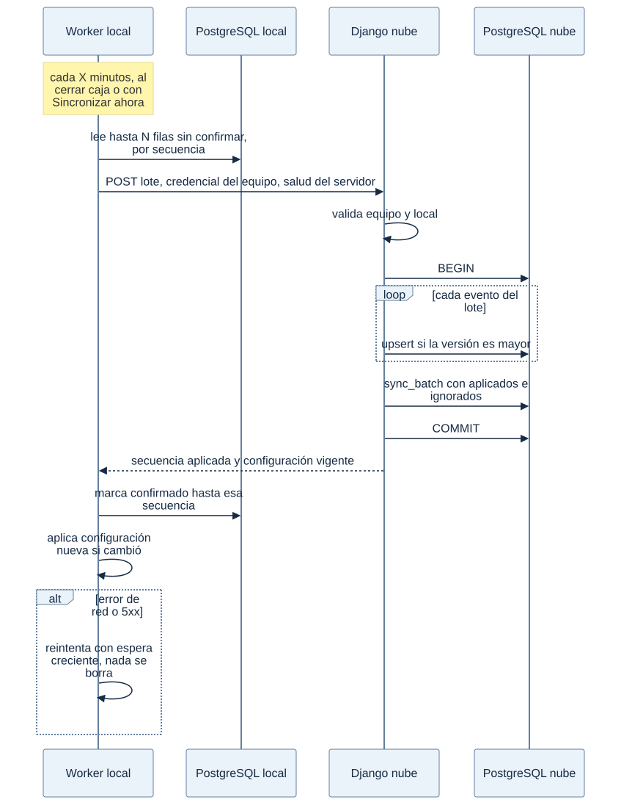
Ver Mermaid editable
sequenceDiagram
participant K as Worker local
participant DB as PostgreSQL local
participant API as Django nube
participant PN as PostgreSQL nube
Note over K: cada X horas, al cerrar caja o con Enviar ahora
K->>DB: lee hasta N filas sin confirmar, por secuencia
K->>API: POST lote, credencial del equipo, salud del servidor
API->>API: valida equipo y local
API->>PN: BEGIN
loop cada evento del lote
API->>PN: upsert si la versión es mayor
end
API->>PN: sync_batch con aplicados e ignorados
API->>PN: COMMIT
API-->>K: secuencia aplicada y configuración vigente
K->>DB: marca confirmado hasta esa secuencia
K->>K: aplica configuración nueva si cambió
alt error de red o 5xx
K->>K: reintenta con espera creciente, nada se borra
end05-secuencias-tecnicas.md · diseño objetivo o propuesta, sin implementación comprobada · HU-230, HU-233, HU-234, HU-235, HU-271
TEC-05. Del pull request a producción
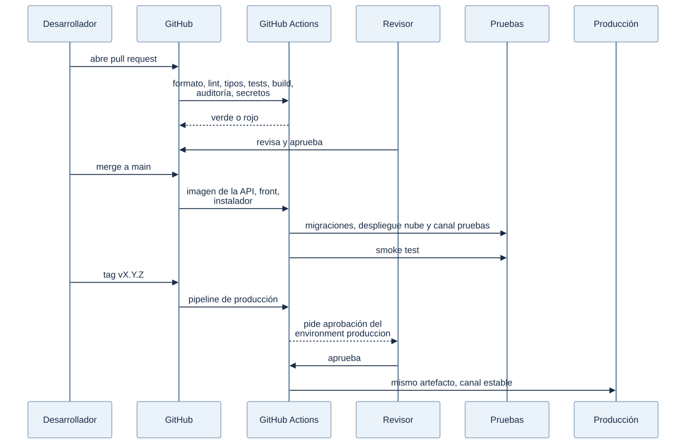
Ver Mermaid editable
sequenceDiagram
participant Dev as Desarrollador
participant GH as GitHub
participant CI as GitHub Actions
participant Rev as Revisor
participant Pru as Pruebas
participant Prod as Producción
Dev->>GH: abre pull request
GH->>CI: formato, lint, tipos, tests, build, auditoría, secretos
CI-->>GH: verde o rojo
Rev->>GH: revisa y aprueba
Dev->>GH: merge a main
GH->>CI: imagen de la API, front, instalador
CI->>Pru: migraciones, despliegue nube y canal pruebas
CI->>Pru: smoke test
Dev->>GH: tag vX.Y.Z
GH->>CI: pipeline de producción
CI-->>Rev: pide aprobación del environment produccion
Rev->>CI: aprueba
CI->>Prod: mismo artefacto, canal estable05-secuencias-tecnicas.md · diseño objetivo o propuesta, sin implementación comprobada · HU-252, HU-254, HU-255
TEC-06. Vincular el servidor local y actualizarlo a distancia
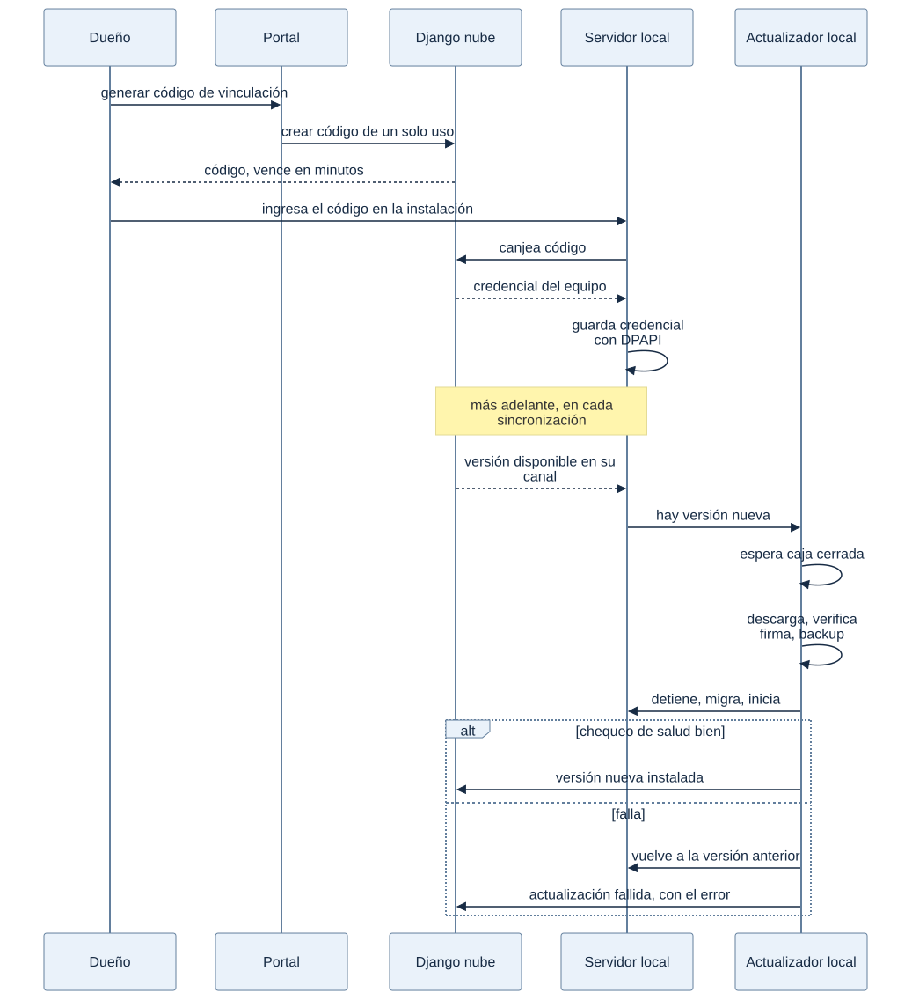
Ver Mermaid editable
sequenceDiagram
participant O as Dueño
participant P as Portal
participant API as Django nube
participant S as Servidor local
participant U as Actualizador local
O->>P: generar código de vinculación
P->>API: crear código de un solo uso
API-->>O: código, vence en minutos
O->>S: ingresa el código en la instalación
S->>API: canjea código
API-->>S: credencial del equipo
S->>S: guarda credencial con DPAPI
Note over S,API: más adelante, en cada sincronización
API-->>S: versión disponible en su canal
S->>U: hay versión nueva
U->>U: espera caja cerrada
U->>U: descarga, verifica firma, backup
U->>S: detiene, migra, inicia
alt chequeo de salud bien
U->>API: versión nueva instalada
else falla
U->>S: vuelve a la versión anterior
U->>API: actualización fallida, con el error
end06-flujos-funcionales.md · diseño objetivo o propuesta, sin implementación comprobada · HU-110, HU-113, HU-150
FUN-01. Ingresar con PIN y abrir la caja
Ver Mermaid editable
flowchart TD
A["Elegir usuario y escribir PIN"] --> B{"¿PIN correcto?"}
B -->|"no"| C{"¿5 intentos fallidos?"}
C -->|"no"| A
C -->|"sí"| D["Usuario bloqueado unos minutos<br/>queda auditado"]
B -->|"sí"| E{"¿Hay turno abierto?"}
E -->|"sí"| F["Ir al salón"]
E -->|"no"| G{"¿Rol?"}
G -->|"mozo"| H["Mensaje: la caja está cerrada"]
G -->|"cajero o dueño"| I["Cargar fondo inicial y turno"]
I --> J["Turno abierto"] --> F06-flujos-funcionales.md · diseño objetivo o propuesta, sin implementación comprobada · HU-131, HU-132, HU-133, HU-134, HU-135, HU-130
FUN-02. Abrir una mesa y cargar la comanda por código
Ver Mermaid editable
flowchart TD
A["F2: elegir mesa"] --> B{"¿Mesa libre?"}
B -->|"sí"| C["Comensales y mozo"] --> D
B -->|"no"| D["Comanda de la mesa"]
D --> E["Escribir código, cantidad o nombre"]
E --> F{"¿Código existe?"}
F -->|"no"| G["Aviso y sonido, campo limpio"] --> E
F -->|"sí"| H{"¿Tiene aclaraciones?"}
H -->|"sí"| I["Selector numerado, Enter o Esc"] --> J
H -->|"no"| J["Línea agregada sin enviar"]
J --> K{"¿Más productos?"}
K -->|"sí"| E
K -->|"no"| L["Enviar a cocina"]
L --> M["Comanda guardada, ticket a cocina"]
M --> N{"¿Imprimió?"}
N -->|"no"| O["Aviso, se puede reimprimir"]
N -->|"sí"| P["Volver al salón"]
O --> P06-flujos-funcionales.md · diseño objetivo o propuesta, sin implementación comprobada · HU-136, HU-140, HU-162, HU-164, HU-169, HU-226, HU-172
FUN-03. Cobrar, facturar o finalizar sin comprobante
Ver Mermaid editable
flowchart TD
A["F4: precuenta"] --> B["F6: cobrar"]
B --> C["Uno o dos medios de pago"]
C --> D{"¿Suman el total?"}
D -->|"no"| C
D -->|"sí"| E["Venta guardada, mesa libre"]
E --> F{"¿Factura o F9?"}
F -->|"F9"| G["Sin comprobante<br/>lista aparte para el contador"]
F -->|"F8 factura"| H["Condición IVA del receptor<br/>consumidor final por defecto"]
H --> I{"¿Hay internet?"}
I -->|"no"| Q{"¿Hay CAEA vigente?"}
Q -->|"sí"| R["Factura con CAEA y QR<br/>emitida en contingencia"]
R --> S["Se informa a ARCA<br/>al volver internet"]
Q -->|"no"| J["Ticket provisorio<br/>no válido como factura"]
J --> K["Pendiente de CAE<br/>se reintenta solo"]
I -->|"sí"| L{"¿ARCA aprueba?"}
L -->|"sí"| M["Factura con CAE y QR impresa"]
L -->|"rechaza"| N["Pendiente con motivo<br/>reintentar o dejar para después"]
K --> L06-flujos-funcionales.md · diseño objetivo o propuesta, sin implementación comprobada · HU-152, HU-153, HU-224, HU-262
FUN-04. Cerrar la caja
Ver Mermaid editable
flowchart TD
A["F10: cierre de caja"] --> B{"¿Mesas abiertas?"}
B -->|"sí"| C{"¿Es el dueño?"}
C -->|"no"| D["Aviso con la lista de mesas"]
C -->|"sí, fuerza"| E
B -->|"no"| E["Ver esperado por medio de pago"]
E --> F["Contar billetes y, opcional, posnet, QR y banco"]
F --> G{"¿Hay diferencia?"}
G -->|"sí"| H["Sugerencias de cobros con ese importe"]
H --> I{"¿Era un medio mal cargado?"}
I -->|"sí"| J["Corregir medio con motivo"] --> E
I -->|"no"| K["Comentar la diferencia"]
G -->|"no"| L["F10 otra vez para confirmar"]
K --> L
L --> M["Turno cerrado, reporte impreso"]
M --> N["Envío a la nube sin esperar"]
N --> O{"¿Hay internet?"}
O -->|"no"| P["Aviso: se envía al volver la conexión"]
O -->|"sí"| Q["Dueño ve el cierre desde afuera"]06-flujos-funcionales.md · diseño objetivo o propuesta, sin implementación comprobada · HU-142, HU-165
FUN-05. Anular una venta
Ver Mermaid editable
flowchart TD
A["Elegir venta y motivo"] --> B{"¿Turno de la venta?"}
B -->|"cerrado"| C{"¿Es el dueño?"}
C -->|"no"| D["Rechazado"]
C -->|"sí"| E["Ajuste en el turno actual"]
B -->|"abierto"| F{"¿Tiene factura autorizada?"}
E --> F
F -->|"no"| G["Venta anulada, sale de los totales"]
F -->|"sí"| H["Pedir nota de crédito a ARCA"]
H --> I{"¿Autorizada?"}
I -->|"sí"| G
I -->|"no"| J["Venta sigue cobrada<br/>anulación pendiente con motivo"]06-flujos-funcionales.md · diseño objetivo o propuesta, sin implementación comprobada · HU-211, HU-212, HU-214
FUN-06. Mis finanzas: cargar un movimiento
Ver Mermaid editable
flowchart TD
A["Dueño en el portal"] --> B["Candado de la barra"]
B --> C["Segunda clave"]
C --> D{"¿Correcta?"}
D -->|"no"| E{"¿5 seguidas?"}
E -->|"sí"| F["Área bloqueada unos minutos"]
E -->|"no"| C
D -->|"sí"| G["Fecha, tipo, categoría, importe, medio, local opcional"]
G --> H{"¿Datos válidos?"}
H -->|"no"| I["Error claro, no se guarda"] --> G
H -->|"sí"| J["Movimiento y auditoría en una transacción"]
J --> K["Aparece en su mes y en el saldo"]06-flujos-funcionales.md · diseño objetivo o propuesta, sin implementación comprobada · HU-200, HU-201, HU-202, HU-203, HU-242
FUN-07. El contador consulta la facturación
Ver Mermaid editable
flowchart TD
A["Email y contraseña"] --> B{"¿Válidos?"}
B -->|"no"| C["Rechazo sin decir cuál falló<br/>auditado"]
B -->|"sí"| D{"¿Más de un local?"}
D -->|"sí"| E["Elegir local"] --> F
D -->|"no"| F["Facturación del mes"]
F --> G["Filtro de fechas o períodos rápidos"]
G --> H["Comprobantes y totales por medio y tipo"]
H --> I["Ventas sin comprobante en lista aparte"]
F --> J["Datos al HH:MM del último envío"]
F --> K{"¿Intenta otra ruta?"}
K -->|"sí"| L["Vuelve a facturación, 403 en la API"]07-estados.md · diseño objetivo o propuesta, sin implementación comprobada · HU-162, HU-164, HU-165, HU-226, HU-168, HU-169
EST-01. Comprobante fiscal
Ver Mermaid editable
stateDiagram-v2
[*] --> Cobrada
state "Venta cobrada" as Cobrada
state "Pendiente de CAE" as Pendiente
state "En duda" as Duda
state "Facturada" as Facturada
state "Facturada con CAEA" as Caea
state "CAEA informado" as Informada
state "Rechazada" as Rechazada
state "Sin comprobante" as SinComp
state "Anulación pendiente" as AnulPend
state "Anulada con nota de crédito" as Anulada
Cobrada --> Pendiente: F8 factura
Cobrada --> SinComp: F9 finalizar
Cobrada --> Caea: F8 sin internet, hay CAEA
Caea --> Informada: vuelve internet, se informa
Pendiente --> Facturada: ARCA aprueba
Pendiente --> Rechazada: ARCA rechaza
Pendiente --> Duda: sin respuesta
Duda --> Facturada: consulta encuentra el CAE
Duda --> Pendiente: consulta no lo encuentra
Rechazada --> Pendiente: reintento tras corregir
Facturada --> AnulPend: anular venta
AnulPend --> Anulada: nota de crédito aprobada
AnulPend --> Facturada: nota de crédito rechazada
SinComp --> [*]
Anulada --> [*]
Informada --> [*]07-estados.md · diseño objetivo o propuesta, sin implementación comprobada · HU-130, HU-131, HU-136, HU-137, HU-140
EST-02. Sesión de mesa
Ver Mermaid editable
stateDiagram-v2
state "Libre" as Libre
state "Ocupada" as Ocupada
state "Con precuenta" as Precuenta
state "Cobrada" as Cobrada
[*] --> Libre
Libre --> Ocupada: abrir con caja abierta
Ocupada --> Ocupada: enviar comanda o anular línea
Ocupada --> Precuenta: F4 con todo enviado
Precuenta --> Ocupada: agregar productos
Precuenta --> Cobrada: cobro confirmado
Ocupada --> Libre: pasar a otra mesa
Cobrada --> Libre: mesa liberada07-estados.md · diseño objetivo o propuesta, sin implementación comprobada · HU-150, HU-152, HU-154, HU-223, HU-262
EST-03. Turno de caja
Ver Mermaid editable
stateDiagram-v2
state "Sin turno" as Sin
state "Abierto" as Abierto
state "En arqueo" as Arqueo
state "Cerrado" as Cerrado
state "Cerrado y enviado" as Enviado
[*] --> Sin
Sin --> Abierto: fondo inicial
Abierto --> Abierto: ventas, movimientos, correcciones
Abierto --> Arqueo: F10
Arqueo --> Abierto: Esc
Arqueo --> Cerrado: F10 de nuevo
Cerrado --> Enviado: lote confirmado por la nube
Cerrado --> Cerrado: corrección del dueño como ajuste posterior
Enviado --> Sin: listo para el próximo turno07-estados.md · diseño objetivo o propuesta, sin implementación comprobada · HU-260, HU-261, HU-263, HU-265
EST-04. Fila del outbox y lote de sincronización
Ver Mermaid editable
stateDiagram-v2
state "Pendiente" as Pend
state "En vuelo" as Vuelo
state "Confirmada" as Conf
state "Purgada" as Purg
[*] --> Pend: misma transacción que el cambio
Pend --> Vuelo: entra en un lote
Vuelo --> Conf: la nube devuelve su secuencia
Vuelo --> Pend: error de red o rechazo, reintento
Conf --> Purg: pasan N días
Purg --> [*]08-operacion.md · diseño objetivo o propuesta, sin implementación comprobada · HU-123, HU-194, HU-250, HU-270, HU-280, HU-281
OPS-01. Del sistema anterior al nuevo
Ver Mermaid editable
flowchart TD
A["Medir el sistema anterior en uso: línea base"] --> B["Copia actual de la base del sistema anterior"]
B --> C["Importar carta, mozos y clientes con CUIT"]
C --> D["Instalar servidor local y vincularlo"]
D --> E["Ensayo en paralelo<br/>el anterior factura, el nuevo en homologación"]
E --> F{"¿Servicio de prueba completo bien?"}
F -->|"no"| G["Corregir y repetir el ensayo"] --> E
F -->|"sí"| H["Día del corte, antes de abrir"]
H --> I["Último número del sistema anterior por tipo y punto de venta"]
I --> J["Sistema nuevo pasa a ARCA producción<br/>toma el siguiente número"]
J --> K["Acta del corte"]
K --> L["Primeros servicios con el equipo disponible<br/>sistema anterior instalado sin facturar"]08-operacion.md · diseño objetivo o propuesta, sin implementación comprobada · HU-246, HU-253, HU-254
OPS-02. Backups y restauración
Ver Mermaid editable
flowchart LR
subgraph Local["Local"]
PGL[("PostgreSQL local")]
BL["pg_dump al cerrar caja y de noche"]
Ext["Disco externo o carpeta configurada"]
PGL --> BL --> Ext
end
subgraph Nube["Nube"]
PGN[("PostgreSQL nube<br/>réplica y Mis finanzas")]
GA["GitHub Actions nocturno<br/>pg_dump cifrado"]
R2[("Almacenamiento externo<br/>Cloudflare R2")]
PGN --> GA --> R2
end
PGL -.->|"sincronización"| PGN
R2 -->|"restauración mensual en entorno aislado"| Prueba["Base de prueba"]
Ext -->|"restauración en PC de prueba"| Prueba2["Servidor local de prueba"]08-operacion.md · diseño objetivo o propuesta, sin implementación comprobada · HU-161, HU-245, HU-255, HU-265, HU-266
OPS-03. Alertas operativas
Ver Mermaid editable
flowchart LR
S["Reporte de salud del servidor local<br/>viene en cada lote"] --> Eval{"Evaluación en la nube"}
Cron["Chequeo programado en la nube"] --> Eval
Eval -->|"sin lotes hace más del umbral"| A1["Sync atrasada"]
Eval -->|"facturas pendientes viejas"| A2["CAE pendientes"]
Eval -->|"faltan 30 días"| A3["Certificado por vencer"]
Eval -->|"backup local fallido"| A4["Backup local"]
Eval -->|"actualización revertida"| A5["Versión fallida"]
Eval -->|"conciliación diaria no cierra"| A6["Diferencia local y nube"]
A1 --> Mail["Email al dueño y al equipo"]
A2 --> Mail
A3 --> Mail
A4 --> Mail
A5 --> Mail
A6 --> Mail09-version-2.md · diseño objetivo o propuesta, sin implementación comprobada · HU-300, HU-302, HU-310, HU-311
FUT-01. Menú QR multilenguaje
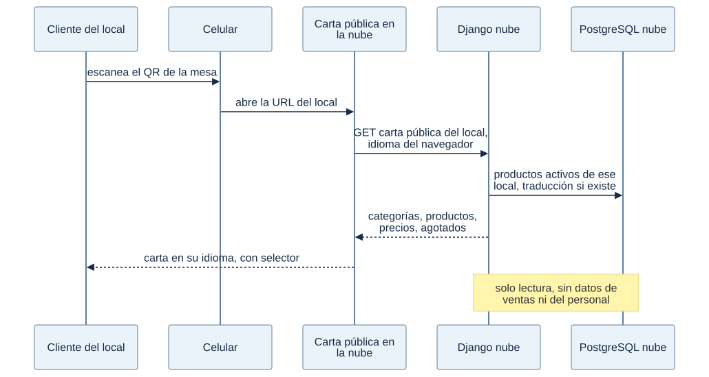
Ver Mermaid editable
sequenceDiagram
participant Cli as Cliente del local
participant Cel as Celular
participant Pag as Carta pública en la nube
participant API as Django nube
participant PN as PostgreSQL nube
Cli->>Cel: escanea el QR de la mesa
Cel->>Pag: abre la URL del local
Pag->>API: GET carta pública del local, idioma del navegador
API->>PN: productos activos de ese local, traducción si existe
API-->>Pag: categorías, productos, precios, agotados
Pag-->>Cli: carta en su idioma, con selector
Note over API,PN: solo lectura, sin datos de ventas ni del personal09-version-2.md · diseño objetivo o propuesta, sin implementación comprobada · HU-320, HU-321, HU-322, HU-323, HU-324, HU-247
FUT-02. Stock de bebidas
Ver Mermaid editable
flowchart LR
Compra["Ingreso de mercadería"] -->|"suma"| Mov[("Movimientos de stock<br/>solo agregar")]
Venta["Comanda enviada"] -->|"resta en la misma transacción"| Mov
Anul["Línea anulada"] -->|"devuelve"| Mov
Inv["Conteo de inventario"] -->|"ajuste con motivo"| Mov
Mov --> Exist["Existencia por producto<br/>suma de movimientos"]
Exist --> Min{"¿Debajo del mínimo?"}
Min -->|"sí"| Alerta["Aparece en el panel del dueño"]